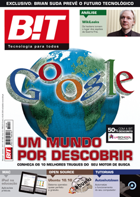

I was asked by the magazine B!T in Portugal to write a little something about trends in the year 02011. There was a slight mix-up between word count and character count, so my article was much longer than they expected. It was split-up into several smaller articles, translated into Portuguese and run in their print magazine. I have been graciously allowed to publish the English version here for all the non-B!T readers.
Overall, it isn’t really a prediction article about 02011, but a look back at the last 2,000 years of technological advancements and how we shouldn’t really be surprised at any “new” developments in the next 12 months. I’ve glossed over plenty of examples and cherry-picked others, but that’s what you get in less then 3,500 words—a very abridged version of history.
02011
Welcome to 2011 or as long term thinkers write, 02011. You have probably heard many fanciful predictions about the next 12 months such as; this is the year of mobile, the year of social media, the year of Artificial Intelligence, the year that one country surpasses another online. Rather than attempt to make some silly guesses about the next 12 months, I want to look back through 2,000 years of history and see how far we’ve come. I want to show a new perspective on old technologies and everything that has happened in a relatively short time to get us to today.
It’s estimated that human-kind stopped being hunter gatherers about 10,000 BCE and changed over to a more agrarian society. This was the first major step in the advance of technology. Certainly technology had existed before this. One hunter made a better knife, another a better spear. We harnessed fire, built traps and even primitive shelters. We’ve never been technology-less, but rather on a sliding scale of how much technology we used. Chimpanzees and other primates are using technology today. They use sticks and other tools to help catch food. Technology pre-dates homosapians, but it wasn’t until we settled into cities, towns and farms that the first truly technological revolution began.
If the first major shift was 10,000 BCE, where will we be in the year 10,000? What will 10,000 CE look like compared to 10,000 BCE? In those 20,000 years things are guarnteed to be vastly different. When we think in terms of 20,000 years, 02011 is merely a blip on this larger scale. This is one reason why I prefix my years with an extra zero. The leading zero in 02011 also reminds us that this isn’t the eleventh year in 2000, but the 2011th year in 10,000! It certainly puts time into a completely different context.
The long now organization is in the process of building a clock that will take 10,000 years to complete one cycle. It is an engineering marvel to think about how to build a mechanical device that will last that long, taking into consideration all the tiny changes in the Earth’s wobble, wear and tear, the elements, friction and many more tiny factors. Most of us only deal with leap years, but we actually have leap-seconds every few years. If you ignore them in your daily life that’s no big deal, but compound those tiny changes over 10,000 years and it has an affect!
We’ve seen issues of “roll-over” in dates before. When everyone flipped-out over the year two thousand bug, it was because in the early days of programming, we didn’t have much memory in the computer. To save space programmers represented a year like 1970, simply as 70. It cut the space needed in half and at that time, memory was expensive and scarce so it made complete sense. When programs would get to the year 1999 and added one, instead of becoming the year 2000, it became 00. This error caused all sorts of problems in banking and other sectors.
The Y2K bug lingered in code for many years, partly because programmers are lazy, some say efficient, and reuse existing code. So these two-digit years stayed with us right up until the new year 01999 and in some cases beyond. We’ve solved the Y2K bug by making dates four digits long, but all that has done is push back the problem to the year 10,000 when we have the Y10K bug. The same thing will happen, in the year 9999 when we add one, we’ll get the year 0 rather than 10,000. Sure, it’s a long time off, but I’m sure that’s what the people in 01970 said when they programmed the mainframe computers with only two digit years. That’s nothing to say of the 2038 bug in 32-bit computers, but that’s another article in itself.
Seeing a date written as 02011 appears to be typo and that something is wrong, but it’s there to remind us of how tiny and short-term is our impact. If we are forced into thinking in longer-terms, then everyone wins. We build products to better standards, we disposable of objects less and we take not only our children, but their children’s children many time over into consideration.
log backwards
02011 is the 11th year in the second millennium. To understand the future, we need to wind the clock backwards and look at history. In doing so, we can see previous predictions, changes, long arcing threads and how civilization progresses and deals with problems. Only then we can look into the future with a better accuracy and understanding based on how we’ve dealt with similar problems in the past.
00001
If we go back all the way back to the start of the Common Era, two-thousand plus years ago, in the year 1 the Roman Empire dominated most of Europe. The average life span was 28 years old, which didn’t give you much time to make an impact in society. That doesn’t mean that no one was older than 30, it means that many people died at young ages dragging down the average. Young men died in battled, infant mortality was high and diseases all contributed to a difficult up-bringing.
Not everything was doom and gloom. It was around this time that concrete was discovered and major building projects were initiated. Roman aqueducts, paved roads and public baths all contributed to an improved standard of living. With all of these technological advances, the Roman Empire lasted for close to 500 years, almost a quarter of the Common Era.
The city of Rome was also the largest city of its time with more than a million people. Dealing with that many people without the aid of technology we take for granted today is a social and technological feat in itself, not to mention sanitation, food, disease and pest control, tax collecting, imports and security!
01800
Let’s jump forward closer to our own present. Rewinding two-hundred years puts us around the year 01800. We are at the cusp of the next technological jump, the Industrial Revolution. In the late 01700s and early 01800s technological progress was accelerating through the use of steam, mechanization and metallurgy. This period was the biggest leap forward in human existence since the domestication of plants and animals over 12,000 years prior.
It was during this time that industry, mining and transportation all exploded giving rise to wealth and population throughout Europe. The steam locomotive appears right around the turn of the 19th century fueling the industrial needs of the UK, US and shortly all of Europe.
If you were part of the elite you could expect to see and possibly own the pinnacle of the technology of the day. The tech gadgets of the 01800s were objects called automata. These are small machines that you wound-up and they went through complex motions. Some played musical instruments, others made dolls write and robot ducks swim. Automata goes back many, many years, but during the tail end of the Industrial Revolution it reached a peak. The most famous of these automata is probably “The Turk“. It was a chess playing robot, which is the inspiration for the name of Amazon’s “Mechanical Turk”.
The 01800s also brought about the Age of Enlightenment and the birth of countries. The United States had just formed in 01776 and was find its footing in a new world, making friends and enemies as it went along. The French Revolution (01789–01799) was a time of great change from monarchy to democracy in less than 10 years. The fall of the Roman Empire was a long and drawn out affair compared to how fast society and governments moved in the 01800s.
On the mass communications front, France already had in place a grand semaphore network, which allowed information to be communicated over large distances very quickly. It was much faster than someone riding on horseback between two points or sailing a ship. These semaphore towers had movable arms which signaled to the next tower in line several kilometers away instantly. That tower would then relay it to the next inline and so forth. Messages could be carried throughout the country very quickly. The Ancient Greeks had a similar system, but it was binary. Either there was a torch with fire or their wasn’t. With the semaphore network, it was possible to place the two arms in various positions, which meant different letters or phrases allowing a more complex messages to be sent than ON or OFF in the Greek system.
All of this was a precursor to the telegraph system which was invent in the very early 01800s and gained in popularity in the 01830s. Tom Standage wrote an excellent book on the telegraph system. He called it the “Victorian Internet“. The idea being that someone from the 01830s would not be impressed with our modern day email and sms communications, because to them, they already had an equivalent in the form of the telegraph!
01990
If we rewind just 20 years to 01990 it’s a measly 1% of our total journey, but it still seems so far away.
It was in the 90s that Hip-hop music broke into the main-stream and the genre Grunge peaked. The top grossing box office movie was Ghost with Home Alone not far behind.
01990 saw Earth really look back on itself in a way we’ve never done before. The famous photo called “Pale Blue Dot” was released. It’s a photo of a tiny Earth taken from Voyager I as it left the Solar System. On that tiny pixel was all of the history of humanity. Everything that has happened on the Earth took place in a tiny, tiny region of space.
It was also in 01990 that the Hubble Space Telescope was launched, sending back awe inspiring photos of the galaxy and universe. The Hubble Ultra Deep Field photo is probably the most famous of the fruits of this labor.
As we turned to space, there was plenty still happening down on Earth. 01990 is commonly referred to as the year the Cold War ended. Many USSR countries started to defect, Germany was being re-united, military spending in most countries dropped dramatically, setting things in motion for the rest of Europe.
A new start-up tech company released their software “Windows 3.0” while Sir Tim Berners-Lee wrote the final drafts of what would be called “The World Wide Web”. Both of these technologies dominated the next few years and are still ever-present in 02011.
02009
Just two years ago was 02009. I would bet that many of the websites you visit today are less than two years old. From ideas such as Groupon.com and Foursquare, the time that it takes information to go from an idea on paper to a successful company is getting smaller and smaller. 02009 was the year Oprah joined Twitter, skyrocketing it as a household name. Barack Obama became the US president and won the Nobel peace prize, swine flu created a global scare and potential pandemic.
The swine flu outbreak showed the power of predictions when Google launched the ability to track real-time searches. As people in certain areas were asking about flu symptoms, Google knew something was brewing and where before many of the health organizations!
When Michael Jackson died the news spread like wild-fire. The time it took for us to learn about something after it happens is ever decreasing. The news of Michael Jackson’s death made it around the globe incredibly fast. News of disasters such as tsunamis and earthquakes take seconds rather than days or months. This means the response to these disasters is also increasing in speed. We can get funds, food and people to the problem areas sooner, sometimes even before there is a problem. Sites like Ushahidi, Open Street Map and others are all bottom-up response systems to disasters and civil unrest.
Cheap, disposable technology is becoming more and more apparent. Matt Webb tells an excellent story about the technology of cheap children’s toys. In one catalog he managed to find an inexpensive Artificially Intelligent Hamster. It was selling for about $14.00. He did all the calculations for packaging, distribution, etc. and guessed that your plastic hamster toy can’t cost more than $2.00 to create in material and labor costs. After plenty of other fees, safety checks and certifications, he estimates that you have around $0.07 to $0.25 for all your electronics and that includes the Artificial Intelligence! This is a far cry from the automata of 200 years earlier, these devices are cheap and full of silicon smarts.
02011
So what can we expect from 02011? Anything I would tell you that will be new in 02011 someone reading this article will say to themselves, “Hey, I saw that last year!”. There is an often over used quote by William Gibson saying “The future is here, it just isn’t evenly distributed yet” and he’s right. If you want to know what’s going to be big in the next twelve to eighteen months, just look what that really smart kid is into right now. He or she will be tinkering with your future, today. Unsurprisingly, anything I say here will be “Duh” for some of you, yet to others it will be a completely new insight. The other important aspect of any future predicting is to look at the track record of past predictions. We’re really good at remembering those few lucky people who guessed right about the future. We also look-up to the really smart people who can actually influence it. That said, there tends to be an inevitable prediction about how X is going to run out and we’re doomed. We see this with Moore’s law—the speed of a processor can’t keep doubling while dropping in price for ever. There is a physical barrier to the distance of the circuits on a nano scale! Peak Oil is another prediction that will end our daily lives as we know it! While both of these are based in fact, they forget about the past and how ingenious we humans really are. Back in 01894 all major metropolitan areas were growing and growing fast. The major form of transport was by horse—and do you know how much waste a horse produces a day? I certainly didn’t, but it is somewhere between 6–16 kg. Now, in a city like London or New York, that piled-up quickly. People predicted an end to urban areas because it was impossible to handle the waste, but smart people side-stepped the whole problem with the invention of the car. Sure, we’ll have peak oil in the future, but by then smart people will have figure out alternatives. Chip manufactures will keep pushing Moore’s law beyond silicon wafers into some new technologies or architecture. That’s a prediction I can guarantee.
If you look back 200 years to 01800s when the telegraph exploded in popularity, the world got smaller quickly. To send a message from England to India pre-telegraph would have taken 6–9 months by boat, but only a few years after the telegraph was invented an implemented, it had spread almost worldwide. At that point, it only took a few minutes to send a message from London to Delhi and get a response. I am sure at the time, they complained about globalization, how parts for their steam engines were being manufactured abroad, how the younger generation didn’t understand how life “used to be” or about how the hand-writing standards and lost art of letter writing was deteriorating in a world of “pay-by-the-word” telegrams. 200 years on in 02011 we will hear the same complaints. SMS is ruining the language, email overload, globalization, foreign imports, etc. Somehow, all of these worries we think are just our own have actually been around for hundreds, if not thousands of years. I’m sure those first bronze age Britons saw the new Roman houses being erected 2000 years ago thought to themselves “There goes the neighborhood!” It just points out that if we don’t look back at history, we’ll fail to see our mistakes and that many of our everyday problems aren’t unique.
So what will the trends in the next 12 months be? More of the same stuff? A rehash of an 01811 invention or something mind-blowingly new? Some of both I would expect. There is someone working in a lab right now, working on a break through new medicine, invention, idea or equation. Maybe The Large Hadron Collider will find the elusive Higgs-Boson and explain what happened at the moment of the Big Bang. We might be able to understand more about the universe, but at the same time, we’ll get cheaper AI hamsters.
For everyday consumers, technologies such as Near Field Communications (NFC) are teetering on entering everyday use. These are technologies such as RFID, where the device and reader are paired at very short distances. Throughout many major metropolitan areas, including Lisbon, London and others, you have travel cards which are placed on readers to debit your account and provide you with a service. As NFC gains in popularity much of this will be built directly into other devices such as your phone. It certainly isn’t a new invention, but a new way of packaging and using it.
Printing on Demand with services like MOO allow you to print short-run, one-off type projects. Recently, Newspaper club started printing short-run newspapers. These services will continue to grow in 02011 and extend to 3D printing. Both of these technologies have been around for awhile, neither of these are new in 02011, but when we look back, it will be around now that these technologies turned into something for mass-consumers. Just recently the BBC did a fluff story about 3D printers before christmas. It might be fluff for most people in the tech industry, but the BBC’s audience is vast and diverse, the fact that they see value in mentioning this technology means that it is just about right for their audience to use, which means it has the potential to tip very soon.
As for some truly world changing inventions for 02011. They are already invented, but we probably don’t know about it yet. Cures for AIDS or cancer are in a test-tube somewhere going through rigorous tests. When it is declared safe for us to consume might be years away. The same is true of any discovery of life on Mars or extra-planetary systems. It will be checked, rechecked and peer-reviewed before we may know about them. I don’t doubt that 02011 will be an interesting year to live through. Just look at the previous 2000 and you’ll see that with every passing year the quality of life improved, technology gots faster and blended with more and more parts of our daily lives. 02011 will be so much more exciting than 02009, which means 02012 is something to really look forward too!